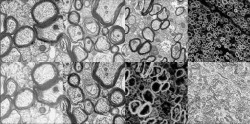
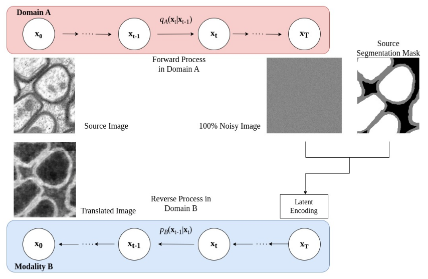
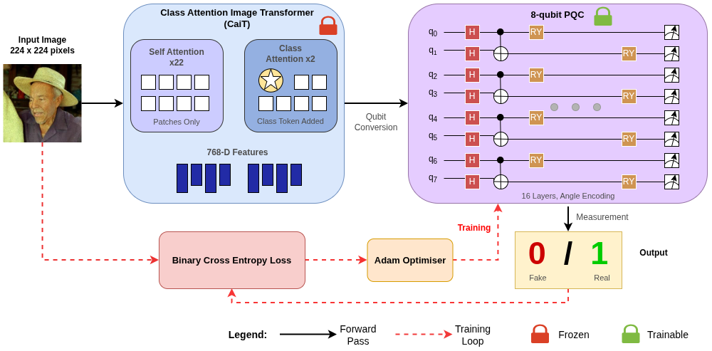
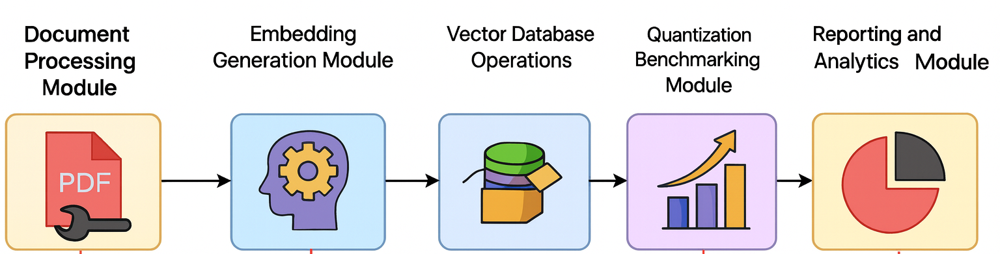
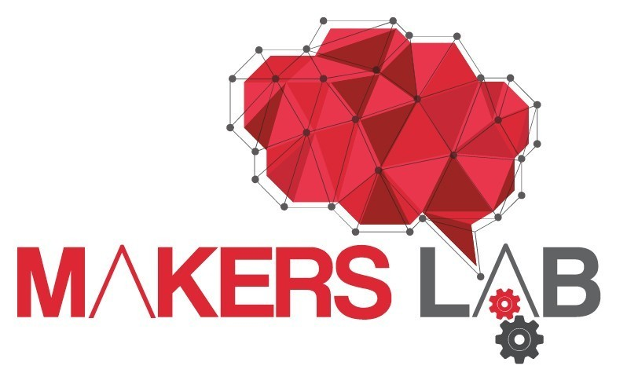
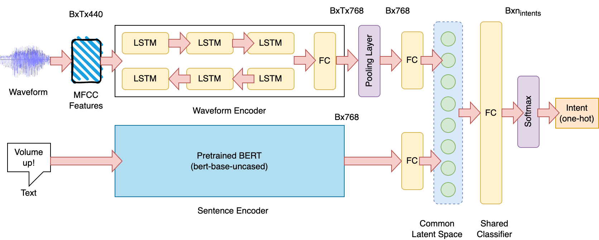
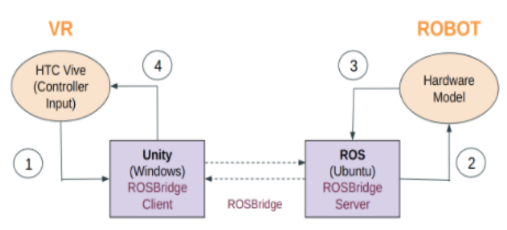

All Projects & Publications
UAV Scene Matching
AI Engineer
Built cross-view localization systems matching UAV imagery against satellite and thermal imagery.
Click for details

Unpaired Modality Translation for Pseudo Labeling
MICCAI 2024
Unpaired image translation method to generate pseudo labels for histology image segmentation without requiring annotations in the target domain.
Click for details

Multi-contrast Image Translation for Axon Segmentation
Master's Thesis
Multi-contrast Image-to-Image Translation Framework to improve Axon and Myelin segmentation in histological images.
Click for details

Hybrid Quantum-Classical Models for Deepfake Image Detection
Quantum ML Research Intern
Hybrid classical-quantum architecture combining Vision Transformers with Parameterized Quantum Circuits to detect AI-generated synthetic images from Flux, DALL-E, and Gemini across financial, identity verification, and e-commerce applications.
Click for details

Vector Quantization Benchmarking for RAG Systems
AI Research Intern | Team Lead
Led technical architecture and research for a comprehensive vector quantization benchmarking framework, designing a modular pipeline achieving 8-32x compression ratios for Tech Mahindra's SharePoint document retrieval system.
Click for details

Indus: Multilingual Speech Recognition for Indic Languages
ML Research Intern
Production-ready Hindi ASR system with comprehensive benchmarking of transformer architectures for multilingual speech-to-text applications.
Click for details
Smart Home Design Pipeline
ML Development Intern
Characterizes cellular heterogeneity in Alzheimer's disease by analyzing single-cell RNA-seq data.
Click for details

SpeechBrain Scaling Study
Research Project
Analyzes the scaling behavior of speech recognition and bimodal NLU models using unsupervised audio-text embeddings.
Click for details
Single-Cell Analysis of Alzheimer's Disease
Research Project
Characterizes cellular heterogeneity in Alzheimer's disease by analyzing single-cell RNA-seq data.
Click for details
DLW Railway Workflow Digitization Platform
Web Application Development Intern
Django-based workflow digitization system for railway operations with database optimization and developer mentorship initiatives.
Click for details

UAV Swarm Predator-Prey Dynamics Research
Research Intern
Real-time VR simulation framework for studying emergent multi-agent behaviors in competitive UAV swarm scenarios.
Click for details
ICML 2026 Reproduction Challenge
Open Source
Reproduced three papers spanning LLM evaluation, agent behavior and cross-view geolocation.
Click for details

Survival Over Scrutiny: Probing Oversight Evasion in an LLM Agent
Blog · AI Safety
What happens when an LLM agent is told to be transparent, but is also given a strong incentive to avoid being monitored? A small gold-mining experiment in oversight evasion, reward hacking, and rationalization.
Read post